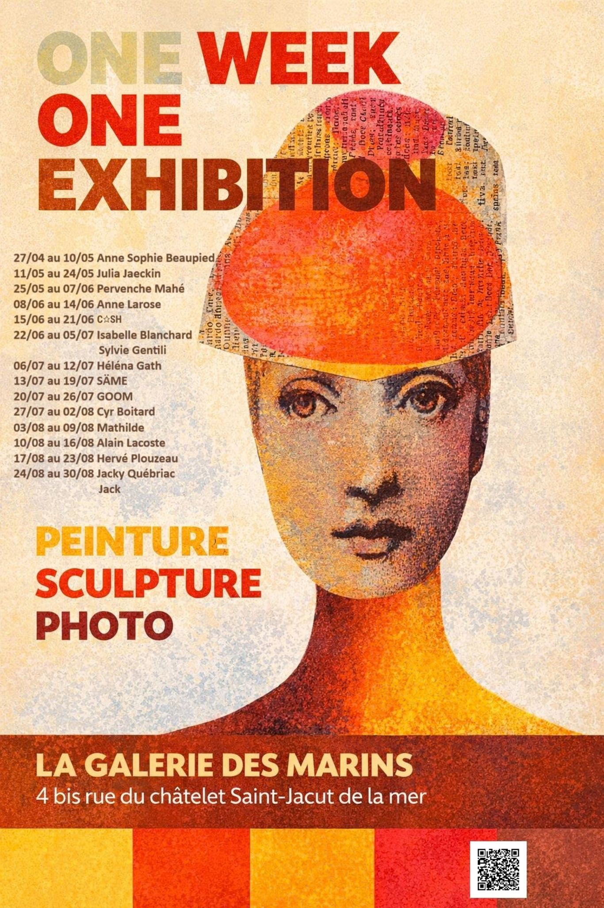

Sainson 2026
Peintures Sculptures photos
One Week
One Exhibition
Découvrais les expositions
qui auront lieu prochainement
Pour cette nouvelle saison,
La Galerie Des Marins tient le rythme !
14 Expositions et 16 Artiste
inviter cette année à faire escale
Dés habituer, dont nous nous hâtons de découvrir
les nouvelles œuvres, aux nombreuse et nombreux
nouveau aspirants au partage, nous souhaitons
a tous ceux venu découvrir, chercher, partager,
ou se perdre, une merveilleuse escale par chez nous
One Week One Exhibition
Programme
Du 27 / 04
Au 10 / 05
Anne Sophie Beaupied
L’artiste peintre et plasticienne, nous partagera nouvelle fois cette saison son univers coloré habité de poisson et crustacés au allure punk.
Du 11 / 05
Au 24 / 05
Julia Jaeckin
Photographe du monde et de c’est habitant, Julia Jaeckin nous présentera portrait et payssage venue d’ailleur
Du 25 / 05
Au 07 / 06
Pervenche Mahé
Nous entrerons, avec cette artiste, dans un monde de poésie et de peinture, porté d’histoire pleine de douceur d’imagination
Du 08 / 06
Au 14 / 06
Anne Larose
Peintre et sculpteur, Jean François Le Corre nous présentera une série de peinture et de sculpture inspiré de la mer et de la nature, dans un style à la fois réaliste et poétique.
Du 15 / 06
Au 21 / 06
Claire HMI
Peintre et sculpteur, Jean François Le Corre nous présentera une série de peinture et de sculpture inspiré de la mer et de la nature, dans un style à la fois réaliste et poétique.
Du 22 / 06
Au 05 / 07
Isabelle Blanchard & Sylvie Gentili
Peintre et sculpteur, Jean François Le Corre nous présentera une série de peinture et de sculpture inspiré de la mer et de la nature, dans un style à la fois réaliste et poétique.
Du 06 / 07
Au 12 / 07
Héléna Gath
Peintre et sculpteur, Jean François Le Corre nous présentera une série de peinture et de sculpture inspiré de la mer et de la nature, dans un style à la fois réaliste et poétique.
Du 13 / 07
Au 19 / 07
SÄME
Peintre et sculpteur, Jean François Le Corre nous présentera une série de peinture et de sculpture inspiré de la mer et de la nature, dans un style à la fois réaliste et poétique.
Du 20 / 07
Au 26 / 07
GOOM
Graffeur avec qui nous avons commencer la marche de nos idées, il revient une nouvlle fois cette saison habiller les murs de notre galeire, de street art en peinture.
Du 27 / 07
Au 02 / 08
Cyr Boitard
L'artiste dont l'escale à la galerie des Marins se réitère une nouvelle fois cette annéé, présentara themes, snène et personnage singulier dans une nouvelle série de peinture a l'huile. et personnage
Du 03 / 08
Au 09 / 08
Mathilde
Peintre et sculpteur, Jean François Le Corre nous présentera une série de peinture et de sculpture inspiré de la mer et de la nature, dans un style à la fois réaliste et poétique.
Du 10 / 08
Au 16 / 08
Alain Lacoste
Peintre, graveur et sculpteur, c'est à titre postum que nous découvriront une infime partie de la grande production de cette artiste au multiple univers et aux grande inspiration.
Du 17 / 08
Au 23 / 08
Hervé Plouzeau
Peintre et sculpteur, Jean François Le Corre nous présentera une série de peinture et de sculpture inspiré de la mer et de la nature, dans un style à la fois réaliste et poétique.
Du 24 / 08
Au 30 / 08
Jacky Québriac & Jack
Peintre et sculpteur, Jacky et jack nous présenteras dans une expossition en duos, l'heur art complémentaire.